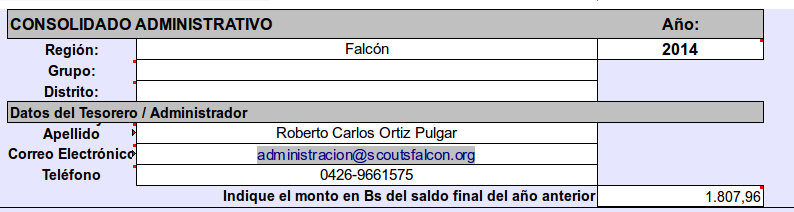
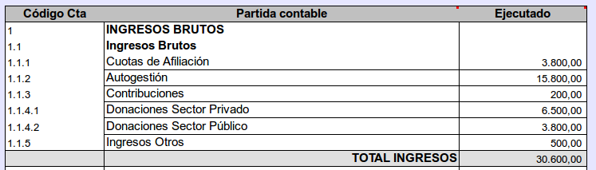
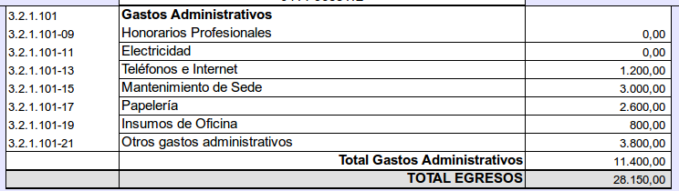
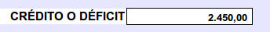
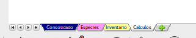

Consolidado Administrativo
Este arcivo contiene el resumen contable de nuestro grupo o distrito, según sea el caso, y se actualiza automáticamente cuanse llenan los otros formatos necesarios.
Así mismo permite una facil supervisión, tal como lo establecen nuestras Políticas del área de Administración, la Constitución y las leyes. Para esto es necesario que todos los niveles de la estructura reporten en un lapso no mayor a 15 días después de haber terminado el mes, su relación de ingresos y egresos.
Estos formatos fueron diseñados de una forma muy simple y con los requisitos mínimos para poder contabilizarlos, pueden ser utilizados por cualquier nivel de la estructura y no deben ser modificados.Paso 1
Lo primero que debemos hacer es entrar en la carpeta de Dropbox de nuestro Grupo, Distrito o Región, allí donde mismo Trabajamos con el TURCO, y hacer doble clic sobre la carpeta Sistema Administrativo
Luego esta se abrirá y nos permitirá ver todos los archivos del mismo. Allí debemos hacer doble clic sobre el archivo consolidado.xls
Importante: Es necesario que tengamos instalado MS Excel u otro que cumpla las misma en nuestra computadora, para que todos los archivos del Sistema funcionen adecuadamente.

Al abrir nuestro archivo consolidado.xls, este nos pedirá que confirmemos la ejecución de los Macros necesarios para que funciones el sistema.
Debemos pulsar donde dice Habilitar Macros.
Finalmente aparecerá una ventana advirtiendo que el archivo o libro, está vinculado a otros archivos, lo cual es necesario para que funcione el sistema.
En este caso debemos pulsar sobre el botón Actualizar, tal como lo muestra la imagen.

Datos Generales
Una vez que llenemos estos datos, los mismos aparecerán de forma automática, en los formatos de ingresos, egresos, donativos en especies e inventarios de nuestro sistema, por eso recomendamos hacer esto primero que nada.
MUY IMPORTANTE: Debemos colocar en la casilla correspondiente el saldo que traemos del año pasado (sumando lo que había en la cuenta bancaria, más lo que teniamos en efectivo al 01 de eneero del año en curso).
Resumen de los Movimientos
Aquí aparecerá reflejada de manera automática la suma de todos los INGRESOS asentados hasta el momento, según se llevaron en el formulario de Ingresos, estos estará clasificado de acuerdo a cada una de las partidas:
De la misma forma aparecerá reflejada de manera automática la suma de todos los EGRESOS asentados hasta el momento, según se llevaron en el formulario de Egresos, estos estará clasificado de acuerdo a cada una de las partidas:


Finalmente aparacerá reflejado la diferencia entre los Ingresos y los Egresos, tomándose como crédito si es positivo el saldo, o como un deficit, en caso contario-
Nota: Siempre se ha de procurar que las finanzas queden en saldo positivo.
Otras Ventanas
En la parte inferior del área de trabajo se pueden ver varias pestañas, estas nos permiten ir a las otras hojas, con las cuales se complementa la información administrativa que debemos manejar.
Como Reportar
El Sistema permite un monitoreo constante del avance de la gestión administrativa, por parte del supervisor inmediato; pero esto no es suficiente para cumplir con las leyes de la República en este sentido.
En vista de los antes expuesto, es muy recomendable que se imprima una copia de este resumen administrativo, y se adjunte al informe de gestión correspondiente, en la sección que toque el tema del manejo financiero.
Esta información debe estar a la disposición de las personas que estén relacionadas con el manejo de dinero y/o aporte de dinero. Como por ejemplo: Jefe de Grupo o Unidad, Empresas Patrocinantes, Padres y Representantes, etre otros
Es necesario que cada administrador conserve una copia de lo que está entregando.
Ayudas para este archivo

Pulsado sobre este ICONO, ubicado en la parte superior derecha, abriremos la sección de la página web de ayuda, creada para este sistema.
Nota: es impresindible que para acceder a esta página, nuestro computador esté conectado a Internet.